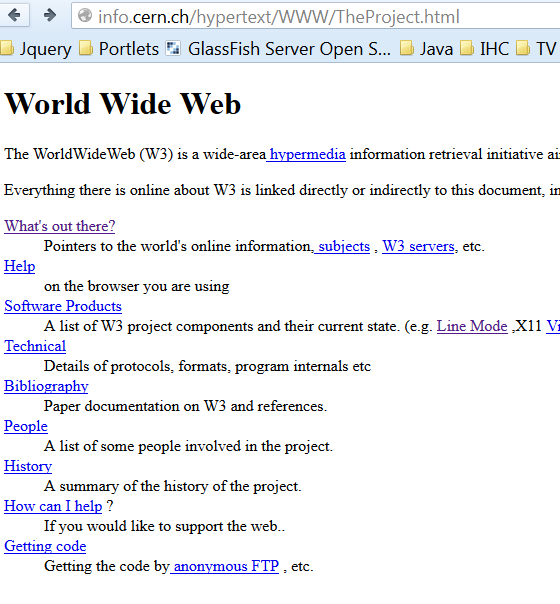
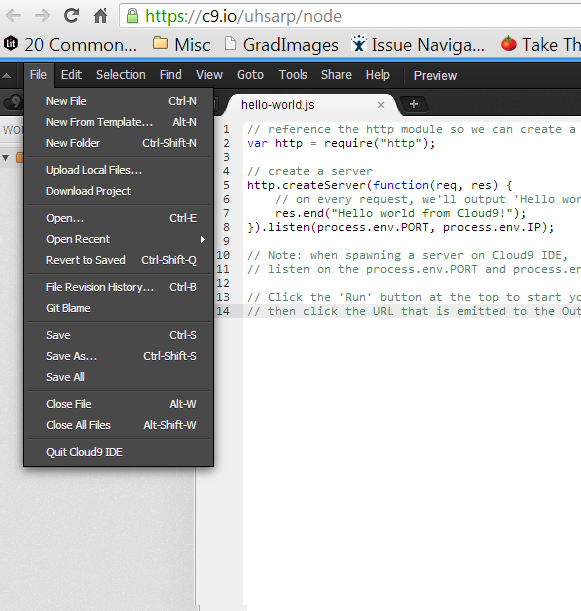
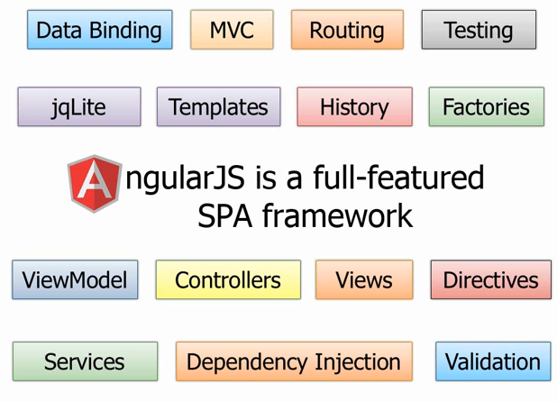
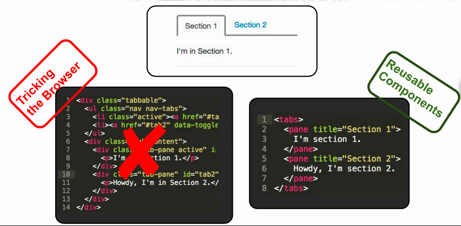

Superheroic JavaScript MVW Framework
Prashanth Batchu
June 11, 2013
Agenda
- Why use Angular?
- Angular Core Features
- Two-way Data Binding, Directives
- Examples
- Best Practices
- Resources
- Q&A
Motivation for creating Angular
|  1993 |  The present |
Users want Desktop style apps
- HTML was originally designed to show static documents on the web.
- But we want Desktop style apps. We get then by either
- Abstracting away HTML, CSS, and/or JavaScript (GWT, Vaadin etc)
- Manipulating the DOM (JQuery)
- Neither of these address the root problem that HTML was not designed for dynamic views.
DOM manipulation is evil!
What do we lose?
- End to end testing capabilities
- Maintainability
- Reusability
What is Angular Anyway?
“AngularJS is a structural meta framework for developing modern dynamic web applications”
Key Features
- Directives and Filters
- Two-way data binding
- Views, Controllers, Scope
- Modules and Routes
- Testing
Exploring Angular
Directives
Examples
Best Practices

Yo scaffolds out a new application, writing your Grunt configuration and pulling in relevant Grunt tasks that you might need for your build.
Grunt is used to build, preview and test your project, thanks to help from tasks curated by the Yeoman team and grunt-contrib.
Bower is used for dependency management, so that you no longer have to manually download and manage your scripts.
Resources
- angularjs.org
- builtwith.angularjs.org
- angular-ui.github.io
- mgcrea.github.io/angular-strap
“Angular: It's like listening to Beethoven while having a Chocolate Milkshake at a private beach in Hawaii”
Vertical Slides
Slides can be nested inside of other slides, try pressing down.
Basement Level 1
Press down or up to navigate.
Basement Level 2
Cornify

Basement Level 3
That's it, time to go back up.
Slides
Not a coder? No problem. There's a fully-featured visual editor for authoring these, try it out at http://slid.es.
Point of View
Press ESC to enter the slide overview.
Hold down alt and click on any element to zoom in on it using zoom.js. Alt + click anywhere to zoom back out.
Works in Mobile Safari
Try it out! You can swipe through the slides and pinch your way to the overview.
Marvelous Unordered List
- No order here
- Or here
- Or here
- Or here
Fantastic Ordered List
- One is smaller than...
- Two is smaller than...
- Three!
Transition Styles
You can select from different transitions, like:
Cube -
Page -
Concave -
Zoom -
Linear -
Fade -
None -
Default
Themes
Reveal.js comes with a few themes built in:
Sky -
Beige -
Simple -
Serif -
Night -
Default
* Theme demos are loaded after the presentation which leads to flicker. In production you should load your theme in the <head> using a <link>.
Global State
Set data-state="something" on a slide and "something"
will be added as a class to the document element when the slide is open. This lets you
apply broader style changes, like switching the background.
"blackout"
"soothe"
Custom Events
Additionally custom events can be triggered on a per slide basis by binding to the data-state name.
Reveal.addEventListener( 'customevent', function() {
console.log( '"customevent" has fired' );
} );
Clever Quotes
These guys come in two forms, inline:
“The nice thing about standards is that there are so many to choose from”
and block:
“For years there has been a theory that millions of monkeys typing at random on millions of typewriters would reproduce the entire works of Shakespeare. The Internet has proven this theory to be untrue.”
Pretty Code
function linkify( selector ) {
if( supports3DTransforms ) {
var nodes = document.querySelectorAll( selector );
for( var i = 0, len = nodes.length; i < len; i++ ) {
var node = nodes[i];
if( !node.className ) ) {
node.className += ' roll';
}
};
}
}
Courtesy of highlight.js.
Intergalactic Interconnections
You can link between slides internally, like this.
Fragmented Views
Hit the next arrow...
... to step through ...
any type- of view
- fragments
Fragment Styles
There's a few styles of fragments, like:
grow
shrink
roll-in
fade-out
highlight-red
highlight-green
highlight-blue
Spectacular image!

Export to PDF
Presentations can be exported to PDF, below is an example that's been uploaded to SlideShare.
Take a Moment
Press b or period on your keyboard to enter the 'paused' mode. This mode is helpful when you want to take distracting slides off the screen during a presentation.